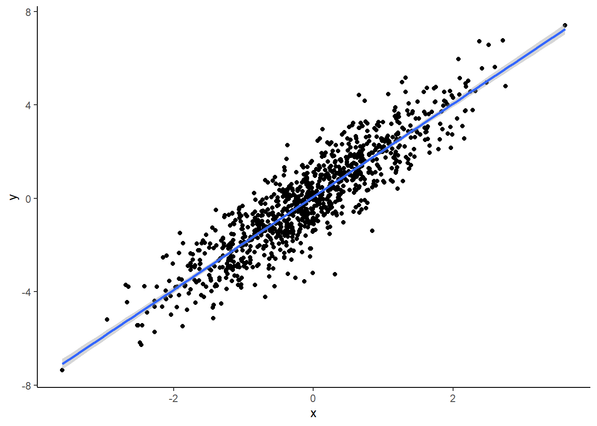

Chapter 3 GLM and GLiM
b_1<-2
x<-rnorm(1000)
y=b_1*x+rnorm(1000)
plot(x,y)
data_1<-as.data.frame(cbind(y,x))
library(ggplot2)## Warning: package 'ggplot2' was built under R version 3.6.1
x<-rnorm(1000)
y=b_1*x+rnorm(1000)
mu=exp(y)/(1+exp(y))
u<-runif(1000)
binary_Y<-ifelse(mu>u,1,0)
data_2<-as.data.frame(cbind(binary_Y,x))
library(ggplot2)
ggplot(data_2,aes(x, binary_Y)) +
geom_point() +
geom_smooth(method = "glm", method.args = list(family = "binomial"),
se = FALSE)+theme_classic()